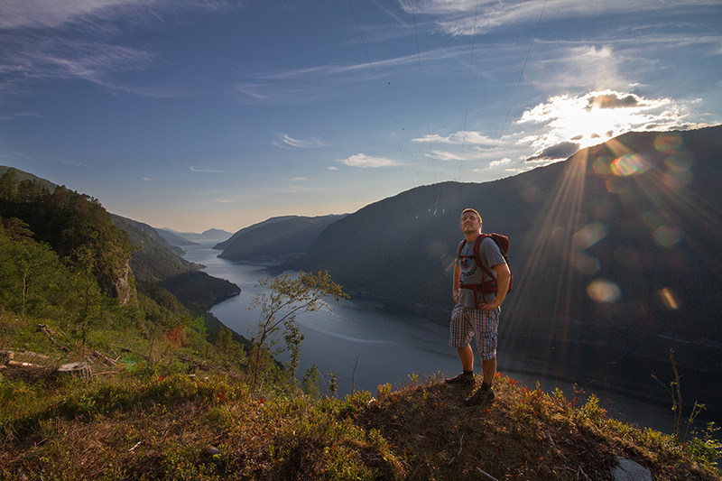

Sommar i Granvin, Hardanger (2014)

Ein samling med klipp frå kjente og kjære fjelltoppar og områder i eller rundt draumfagre bygdi i indre Hardanger; Granvin. Alt er filma sommaren 2014. Eg har skrive på navn inne i filmen på ein del utvalgte stader, toppar og områder. Håpar dette hjelp deg å posisjonera kvar ein er dersom det er nokon av stadane du sjølv ynskjer å ta ein tur til. Eksempel er Nesheimshorgi, Midtfjell, Hardangerfjorden, Stokksel, Oksen, Olastøl, Osete, Espelandsdalen og Espelandsfossen, Trollavatnet, mm.
Ein del av klippa ristar litt, noko som er grunna den sterke vinden som var på dei fleste toppane på dei turane eg var på i løpet av sommaren. Vinden var derimot god å ha grunna den høge (og deilige) varmen, dersom nokon skulle ha gløymt kor fint det var i år.
Alt er filma med eit Phantom 2 Vision+ quadkopter (drone). Opningsbiletet er ein timelapse frå eit GoPro HD Hero3+.
Musikk:
Cecilia Eyes - One Million Whales
P.G. Lost - Yes I Am
Sjå filmen på Vimeo for orginalsoundtrack: